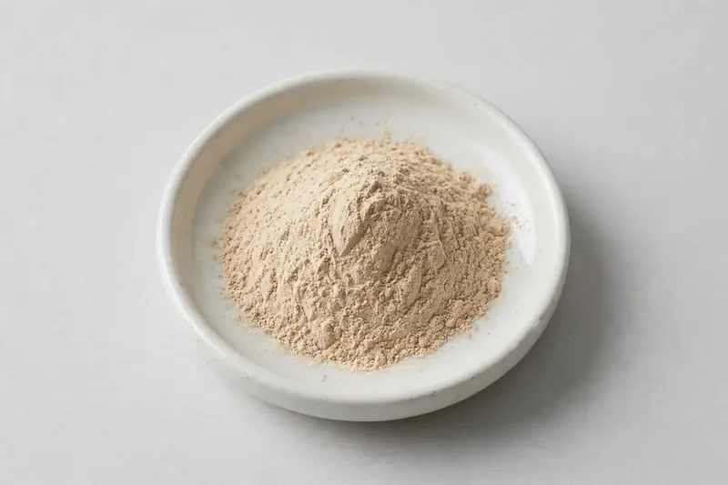

Pleurotus eryngii fruiting body extract positioned for immune and gourmet-nutrition formulations, distinct from common oyster mushroom.

Overview
King oyster mushroom extract is produced from the fruiting body of Pleurotus eryngii and supplied as a light tan powder, standardised on polysaccharides and beta-glucan. Brands request it for immune-positioned supplements and for gourmet-nutrition and savoury flavour concepts, where its umami character is an advantage. It is a different species from common oyster mushroom (Pleurotus ostreatus). We source it through vetted partner producers from our Xi'an base.
Specifications below reflect commonly requested options in the market — not a stock list. Share your target spec and we'll confirm exactly what we can supply, honestly.
| Specification | Details |
|---|---|
| Botanical identity | Pleurotus eryngii fruiting body extract, powder |
| Marker compound | Polysaccharides — commonly requested: 20-50% (UV-Vis); beta-glucan measured separately |
| Appearance | Light brown to tan fine powder |
| Mesh size | Typically 80–100 mesh (confirm per inquiry) |
| Testing | COA/TDS arranged on request; scope agreed per your spec |
Applications
Documentation
We don't claim in-house labs or certifications we don't hold. COA and TDS documents can be arranged on request, and testing scope is agreed against your specification before supply.
FAQ
Related products
Poria cocos
Key marker: Polysaccharides
View specs →Pleurotus ostreatus
Key marker: Polysaccharides
View specs →Phellinus linteus
Key marker: Polysaccharides
View specs →Flammulina velutipes
Key marker: Polysaccharides
View specs →Send your target spec and volumes — we'll respond with a tailored quotation.
Request a Quote